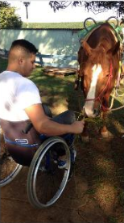

TAA - Terapia Assistida por Animais
Intervenção dirigida de caráter terapeutico onde os animais são
parte integrante do tratamento, atuando na comunicação com o homem
por meio de atividades que desenvolvem o relacionamento, motivação e
confiança. Os efeitos espontâneos que os animais tem sobre os pacientes,
influenciam positivamente no resultado do tratamento. Os animais são os seres
que nos levam a conhecer nossas limitações e como podemos superá-las, sendo
a relação com a natureza e animais um ponto fundamental para o equilíbrio
humano.

EAA - Educação Assistida por Animais
Segue os mesmos critérios da TAA, porém dirigida por profissionais da área
de educação.
AAA - Atividade Assistida por Animais
Atividade que oferece oportunidade motivacional, educacional, lazer,
descontração, socialização e benefícios emocionais e/ou cognitivos.
Envolve o uso de animais em visitas a pessoas de todas as idades em
ambientes variados, não envolvendo metodologia ou procedimentos, ou seja,
o conteúdo das visitas são espontâneos.
Equitação
Atividade que oferece conhecimentos e aprendizados na utilização, manejo,
esportes e posse responsável de equinos, proporcionando momentos de
entretenimento, motivação e recreação